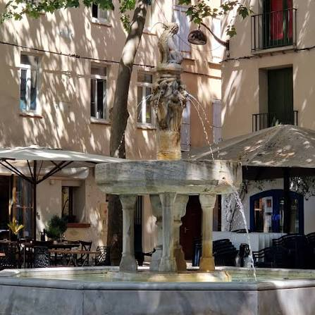

École
de CéretLa Mecque du cubisme, terre du fauvisme


⟹ Ville des peintres du Vallespir ⟸
Petite ville du Vallespir adossée aux premiers contreforts des Pyrénées, Céret bascule dans l'histoire de l'art au tout début du XXe siècle. Le sculpteur catalan Manolo Hugué s'y installe en 1910, séduit par la douceur du climat et la lumière du Roussillon ; il y attire bientôt ses amis parisiens, au premier rang desquels Pablo Picasso, qui découvre la ville dès 1911 et y revient à plusieurs reprises.

Georges Braque et Juan Gris s'y installent à leur tour : entre 1911 et 1913, la petite cité catalane devient l'un des foyers du cubisme naissant, au point qu'on la surnomme aujourd'hui la « Mecque du cubisme ». Non loin, sur la côte, Céret prolonge aussi l'héritage du fauvisme inauguré en 1905 à Collioure par Matisse et Derain, dont l'explosion de couleurs pures irrigue encore la lumière du Roussillon.
Après la Première Guerre mondiale, le peintre russe Chaïm Soutine y séjourne longuement, de 1919 à 1922, et y peint plus de deux cents toiles tourmentées, tandis que Marc Chagall, Max Jacob, Jean Cocteau ou Auguste Herbin fréquentent à leur tour la ville. C'est pour rassembler et transmettre cette mémoire que le peintre Pierre Brune fonde en 1950 le Musée d'art moderne de Céret, enrichi au fil des décennies par les dons mêmes des artistes qui avaient aimé la ville.
Céret, c'est un peu la Mecque du cubisme : on y respirait un air différent, entre les platanes et les Albères.
— Tradition orale attribuée aux artistes de l'École de CéretCe que Manolo Hugué avait amorcé en 1910 ne s'est jamais vraiment interrompu : Céret est demeurée, tout au long du XXe siècle, un lieu où l'on vient peindre, sculpter et façonner la terre. Après la génération du cubisme, celle de Soutine puis celle de l'après-guerre ont continué d'occuper ateliers et arrière-cours du vieux centre, entretenant une tradition d'accueil des artistes de passage.
Ici, la lumière catalane a converti bien des peintres venus du Nord ; elle continue d'attirer, aujourd'hui encore, ceux qui cherchent à s'y frotter.
— Musée d'art moderne de CéretAujourd'hui, le vieux Céret compte toujours des ateliers ouverts au public — céramistes, peintres, graveurs et sculpteurs — installés dans les mêmes ruelles catalanes que fréquentèrent Picasso ou Chagall. Cette continuité, rare pour une ville de cette taille, est entretenue par le musée, par des résidences d'artistes et par des ateliers portes ouvertes organisés régulièrement dans la cité.
Collioure sur la Côte Vermeille, ce port de pêcheurs est le berceau du fauvisme, où Matisse et Derain peignirent côte à côte durant l'été 1905.
Prieuré de Serrabone dans la vallée du Boulès, cet édifice roman du XIIe siècle cache derrière une façade austère une tribune de marbre rose finement sculptée.
Abbaye Saint-Michel-de-Cuxa près de Prades, ce monastère bénédictin fondé au IXe siècle conserve un cloître de marbre rose et accueille chaque été le Festival Pablo Casals.
Perpignan à une trentaine de kilomètres, l'ancienne capitale des rois de Majorque déploie son Castillet et son Palais des Rois de Majorque.